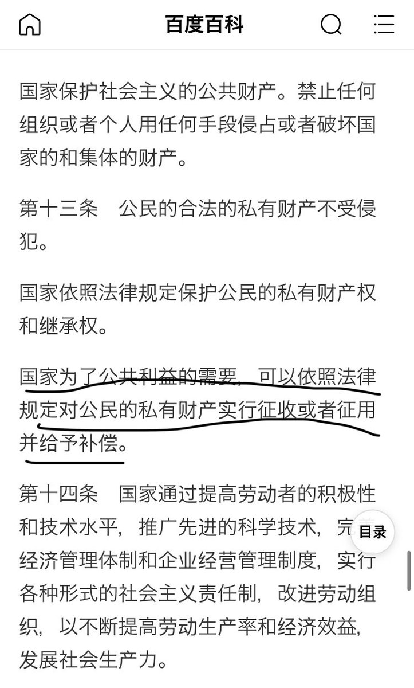

月影独下
@tadatsukiei
@sam51824016070 赔偿呢？

YiFeng Su
@sam51824016070
没有共产党的所谓中国政府在后面撑腰，这些保安敢这样公开暴力的私闯民宅吗？
所以罪魁祸首还是共产党，用谎言，用暴力统治手段来奴役中国人民。
觉醒吧中国人！推翻共产党这个独裁暴政的邪恶政权，共匪不倒就不要相信共匪宣传的所谓爱国主义教育，爱国就是爱党，爱党就是拥护习近平那个独裁者。 https://t.co/nm5LdjVrjK